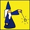

Quatre grenouilles
Castor possède un robot magicien. Il se déplace sur une ligne droite composée de cases. Il est commandé par des symboles.
|  | Le robot magicien avance d'un case. |
| Le robot magicien fait apparaître une grenouille dans la case qui se trouve devant lui. |
Pour faire exécuter au robot magicien une commande plusieurs fois de suite, il est possible d'utiliser des chiffres.
| Le robot magicien fait quatre fois : avance d'une case. Il avance donc de 4 cases. | |
| Le robot magicien fait quatre fois : faire apparaître une grenouille dans la case se trouvant devant lui. Il y a alors quatre grenouilles dans la case devant lui. |
Pour faire exécuter plusieurs commandes plusieurs fois, on peut utiliser des parenthèses.
 |
Le robot magicien fait quatre fois : avance d'un case puis avance d'une case. Il avance donc de 4 fois 2 cases (8 cases). |
Le robot magicien a le droit de se déplacer sur une case contenant une ou plusieurs grenouilles.
Avec quelle suite de symboles le robot magicien fait-il apparaître 4 grenouilles sur une rangée de 4 cases (une grenouille par case) ?